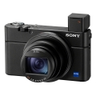

这款便携长焦黑卡新品继承了全画幅微单Alpha 9中的众多技术，在小巧便携的机身上实现了每秒60次AF/AE追踪检测和20张/秒无黑屏高速连拍等功能。RX100 VII采用新开发的约2010万有效像素1英寸Exmor RS CMOS堆栈式影像传感器，内置DRAM芯片。357个焦平面相位检测对焦点与425个对比度检测对焦点的组合，可以实现最快约0.02秒的对焦速度。RX100 VII在视频拍摄中加入了“实时追踪”和“实时眼部对焦”功能，支持视频竖拍信息记录便于智能手机的竖屏观看，并且可外接麦克风，为Vlog视频创作提供了更多的便利。